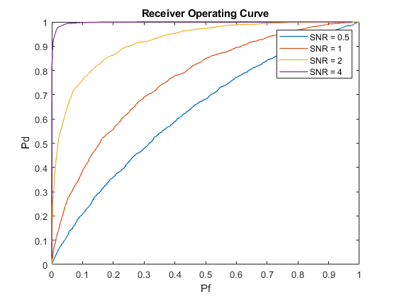
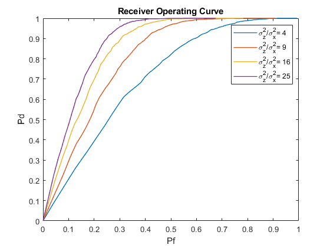
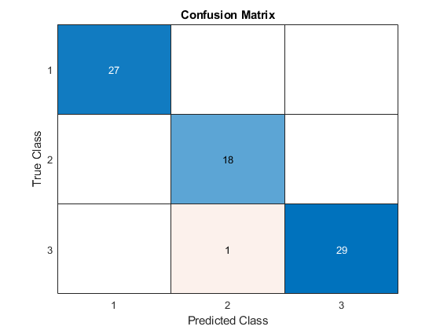

Contents
clc;
clear;
close all;
Part 1
N = 10000;
p0 = 0.8;
p1 = 1 - p0;
eta_1a = p0/p1;
var_1a = 1;
sigma_1a = sqrt(var_1a);
a_1a = 1;
SNR_1a = a_1a/var_1a;
target_1a = (rand(N,1) > p0);
A_1a = a_1a * double(target_1a);
X_1a = sqrt(var_1a) * rand(N,1);
Y_1a = A_1a + X_1a;
gamma_1a = a_1a ./ 2 + var_1a * log(eta_1a) ./ (a_1a);
p1_0 = 1 - normcdf(gamma_1a, 0, sigma_1a);
p0_1 = normcdf(gamma_1a, a_1a, sigma_1a);
theoretical_err = p0 * p1_0 + p1 * p0_1;
experimental_err = 1 - sum(or(and(Y_1a > gamma_1a, target_1a), ...
and(Y_1a <= gamma_1a, ~target_1a))) / N;
disp("Perr_theoretical = " + theoretical_err);
disp("Perr_experimental = " + experimental_err);
a_1b = [0.5, 1, 2, 4];
eta_1b = logspace(-7, 7, N);
var_1b = 1;
pf = zeros(length(a_1b), 1, N);
pd = zeros(length(a_1b), 1, N);
SNR = zeros(length(a_1b), 1, N);
for i = 1:length(a_1b)
target_1b = (rand(N,1) > p0);
A_1b = a_1b(i) * double(target_1b);
X_1b = sqrt(var_1b) * randn(N,1);
Y_1b = A_1b + X_1b;
gamma_1b = a_1b(i)/2 + var_1b * log(eta_1b) / a_1b(i);
pf(i, :, :) = sum(and(Y_1b >gamma_1b, ~target_1b)) / sum(~target_1b);
pd(i, :, :) = sum(and(Y_1b >gamma_1b, target_1b)) ./ sum(target_1b);
SNR(i) = a_1b(i) / var_1b;
end
figure;
for j = 1:length(a_1b)
plot(reshape(pf(j, :, :), [1,N]), reshape(pd(j, :, :), [1,N]), ...
'DisplayName', ['SNR = ', num2str(SNR(j))], 'linewidth', 1)
hold on
end
xlabel('Pf'),ylabel('Pd'),title('Receiver Operating Curve'),legend;
eta_1c = (0.1) * p0 /p1;
a_1c =2;
var_1c = 1;
target_1c = (rand(N,1) > p0);
A_1c = a_1c * double(target_1c);
X_1c = sqrt(var_1c) * randn(N,1);
Y_1c = A_1c + X_1c;
gamma_1c = a_1c/2 + var_1c * log(eta_1c) / a_1c;
pf_1c = sum(and(Y_1c > gamma_1c, ~target_1c)) / sum(~target_1c);
pd_1c = sum(and(Y_1c > gamma_1c, target_1c)) ./ sum(target_1c);
figure;
plot(reshape(pf(3, :, :), [1,N]), reshape(pd(3, :, :), [1,N]), ...
'DisplayName', ['SNR = ',num2str(SNR(3))], 'linewidth', 1)
hold on
plot(pf_1c, pd_1c, '*', 'DisplayName', '\eta = 0.4')
xlabel('Pf'),ylabel('Pd')
title(['Receiver Operating Curve, C_{01} = 10 * C_{10}' ...
'(\eta = 0.4), SNR = ', num2str(SNR(3))])
legend;
Perr_theoretical = 0.18616
Perr_experimental = 0.1796


e)
clear;
N = 10000;
p0 = 0.8;
p1 = 1 - p0;
eta = p0/p1;
var_x = 1;
var_z = 25;
sigma_x = sqrt(var_x);
sigma_z = sqrt(var_z);
a = 1;
target = (rand(N,1) > p0);
A = a * double(target);
X = sigma_x * randn(N,1);
Z = sigma_z * randn(N,1);
Y = a + X .* target + Z .* (~target);
gamma = sqrt(2 * ((var_x * var_z)/(var_x - var_z)) * ...
log(eta * sqrt(var_x/var_z)));
p1_0 = normcdf(gamma, 0, sigma_z) - normcdf(-gamma, 0, sigma_z);
p0_1 = 2 * (1 - normcdf(gamma, 0, sigma_x));
theoretical_err = p1_0 * p0 + p0_1 * p1;
experimental_err = sum(or(...
and( ...
(p1 * (1 / sqrt(var_x * 2 * pi)) * exp(-((Y - a).^2) / (2 * var_x)))>=...
(p0 * (1 / sqrt(var_z * 2 * pi)) * exp(-((Y - a).^2) / (2 * var_z)))...
, target),...
and(...
(p1 * (1 / sqrt(var_x * 2 * pi)) * exp(-((Y - a).^2) / (2 * var_x)))>=...
(p0 * (1 / sqrt(var_z * 2 * pi)) * exp(-((Y - a).^2) / (2 * var_z)))...
, ~target))) / N;
disp("Perr_theoretical = " + theoretical_err);
disp("Perr_experimental = " + experimental_err);
var_z = [4, 9, 16, 25];
sigma_z = sqrt(var_z);
eta = logspace(-5,3,500);
pf = zeros(length(var_z), 1, 500);
pd = zeros(length(var_z), 1, 500);
sigZ_to_sigX = zeros(length(var_z), 1, N);
for i = 1:length(var_z)
target = (rand(N,1) > p0);
A = a * double(target);
X = sigma_x * randn(N,1);
Z = sigma_z(i) * randn(N,1);
Y = a + X .* target + Z .* (~target);
pf(i,:,:) = sum(and(...
(p1 * (1/sqrt(var_x *2*pi)) * exp(-((Y - a).^2) / (2 * var_x))) >= ...
(p0*(1/sqrt(var_z(i)*2*pi)) * exp(-((Y-a).^2)/(2*var_z(i))))*eta...
, ~target))/sum(~target);
pd(i,:,:) = sum(and(...
(p1 * (1/sqrt(var_x *2*pi)) * exp(-((Y - a).^2) / (2 * var_x))) >= ...
(p0*(1/sqrt(var_z(i)*2*pi)) * exp(-((Y-a).^2)/(2*var_z(i))))*eta...
, target))/sum(target);
sigZ_to_sigX(i) = var_z(i) / var_x;
end
figure;
for j = 1:length(var_z)
plot(reshape(pf(j, :, :), [1,500]), reshape(pd(j, :, :), [1,500]), ...
'DisplayName', ['\sigma_z^2/\sigma_x^2= ',num2str(sigZ_to_sigX(j))], ...
'linewidth', 1)
hold on
end
xlabel('Pf'),ylabel('Pd'),title('Receiver Operating Curve'),legend;
Perr_theoretical = 0.18584
Perr_experimental = 0.1873

Part 2
clear;
load('Iris.mat');
num_samples = size(features, 1);
num_classes = 3;
size_split= num_samples/2;
shuffling=randperm(num_samples,num_samples);
training=transpose(shuffling);
training=training(76:150);
testing=training(1:75);
train_f = features(training, :);
train_l = labels(training, :);
test_f = features(testing, :);
test_l= labels(testing, :);
priors = histcounts(test_l) / length(test_l);
track_1=train_l==1;
track_2=train_l==2;
track_3=train_l==3;
feat1=train_f(track_1,:);
feat2=train_f(track_2,:);
feat3=train_f(track_3,:);
mu1=mean(feat1);
mu2=mean(feat2);
mu3=mean(feat3);
cov1=cov(feat1);
cov2=cov(feat2);
cov3=cov(feat3);
result(:,1) = mvnpdf(test_f, mu1, cov1) * priors(1);
result(:,2) = mvnpdf(test_f, mu2, cov2) * priors(2);
result(:,3) = mvnpdf(test_f, mu3, cov3) * priors(3);
[~, est] = max(result, [], 2);
prob_err = 1- mean(est == test_l);
disp("The probability of error: "+prob_err);
cm=confusionmat(est, test_l);
figure;
confusionchart(cm);
title('Confusion Matrix');
The probability of error: 0.013333
